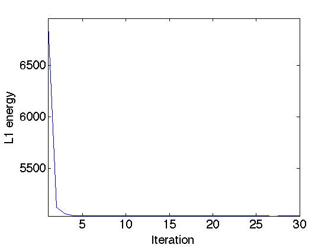
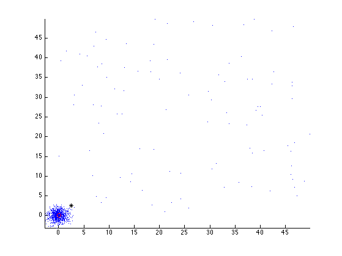
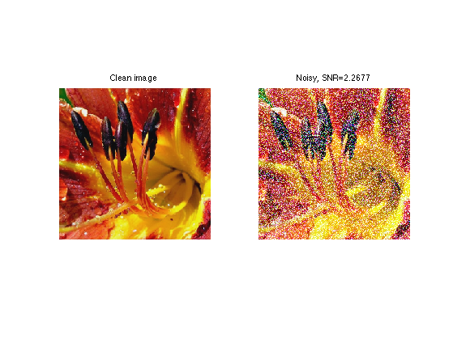
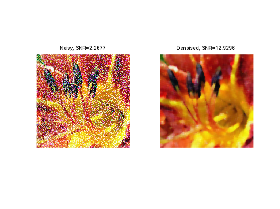
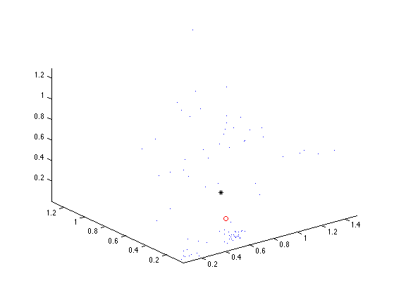
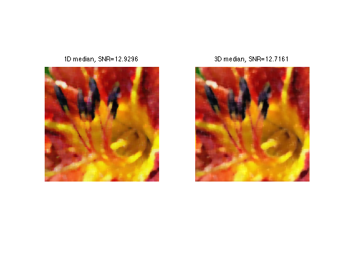

Color Image Denoising with Median Filtering
This numerical tour explores denoising of color images using a local multi-dimensional median. This is the sequel to the numerical tour Outliers and Median Denoiser.
Contents
Installing toolboxes and setting up the path.
You need to download the following files: signal toolbox and general toolbox.
You need to unzip these toolboxes in your working directory, so that you have toolbox_signal and toolbox_general in your directory.
For Scilab user: you must replace the Matlab comment '%' by its Scilab counterpart '//'.
Recommandation: You should create a text file named for instance numericaltour.sce (in Scilab) or numericaltour.m (in Matlab) to write all the Scilab/Matlab command you want to execute. Then, simply run exec('numericaltour.sce'); (in Scilab) or numericaltour; (in Matlab) to run the commands.
Execute this line only if you are using Matlab.
getd = @(p)path(p,path); % scilab users must *not* execute this
Then you can add the toolboxes to the path.
getd('toolbox_signal/'); getd('toolbox_general/');
Multidimensional Median
The median of n real values x is obtained by taking v(n/2) with v=sort(x) (with a special care for an even number n). It can alternatively obtained by minizing over y the sum of absolute values.
|\sum_i abs(x(i)-y)|
This should be contrasted with the mean that minimizes the sum of squares.
|\sum_i (x(i)-y)^2|
This allows one to define a mutidimensional median for set of points x(i) in dimension d by replacing abs by the d-dimensional norm.
We define a Gaussian point cloud in 2D.
d = 2; % dimension n = 1000; % number of points X = randn(d,n);
We modify some points as positive outliers (to shift the mean).
p = 100; % number of outliers sel = randperm(n); sel = sel(1:p); % index of outliers X(:,sel) = rand(d,p)*50;
We can compute the mean point.
m = mean(X,2);
To compute the median in 2D, one needs to minimize the sum of norms. This is not as straightforward as the sum of squares, since there is no close form solution. One needs to use an iterative algorithm, for instance the re-weighted least squares, that computes weighted means.
% number of iterations of the method niter = 30; % initialize the median using the mean med = m; energy = []; for i=1:niter % comute the distance from med to the points dist = sqrt( sum( (X-repmat(med,[1 n])).^2 ) ); % compute the weight, take care of not dividing by 0 weight = 1./max( dist, 1e-10 ); weight = weight/sum(weight); % compute the weighted mean med = sum( repmat(weight,[d 1]).*X, 2 ); energy(end+1) = sum( dist ); end
We can display the decay of the L1 energy through the iterations.
clf; plot(energy, '.-'); axis('tight') set_label('Iteration', 'L1 energy');
We can display the points, the mean and the median.
clf; hold('on'); plot(X(1,:), X(2,:), '.'); plot(m(1,:), m(2,:), 'k*'); plot(med(1,:), med(2,:), 'ro'); axis('tight');
Color Image Denoising using 1D Median
A median filter can be used to denoise a color image, by applying it to each channel of the image.
We load a color image, which is an array of size [n,n,3].
name = 'flowers';
options.nbdims = 3;
n = 256;
M0 = load_image(name, n, options);
M0 = rescale(M0);
We create a colored impulse noise by taking two Gaussians of different standard deviations.
% percent of strong Gaussian rho = .4; % mask of pixel corrupted by strong gaussian mask = repmat(rand(n,n)<rho, [1 1 3]); % deviation of the two Gaussian sigma1 = .03; sigma2 = 1; % noise with two different Gaussians noise = sigma1*randn(n,n,3).*(1-mask) + sigma2*rand(n,n,3).*mask;
Add the noise to the image.
M = M0+noise; pnoisy = snr(M0,M);
Display the clean and noisy images.
clf; imageplot(M0, 'Clean image', 1,2,1); imageplot(clamp(M), strcat(['Noisy, SNR=' num2str(pnoisy)]), 1,2,2 );
In the following, we use a fixed window width.
k = 4; w = 2*k+1;
Exercice 1: (check the solution) A first way to denoise the image is to apply the local median filter implemented with the function perform_median_filtering on each channel M(:,:,i) of the image, to get a denoised image Mindep with SNR pindep.
exo1;
Color Image Denoising using 3D Median
Another method computes a multidimensional median for patches located around each pixel of the image.
First we extract the 3D points corresponding to the colors in the patch located around a pixel at a location (x,y).
% example of pixel location x = 100; y = 73; % location of the patch, with pediodic boundary condition selx = x-k:x+k; selx = mod(selx-1,n)+1; sely = y-k:y+k; sely = mod(sely-1,n)+1; % extract the patch patch = M(selx,sely,:); % patch of pixels, stored as a matrix X = reshape( patch, [w*w 3])';
Exercice 2: (check the solution) Compute the median med of the points in X using the iterative reweighted least squares algorithm. This computed median med should be stored in the result as Mmed(x,y,:) (you need to reshape med so that its size is [1 1 3]).
exo2;
We can display the points, the mean and the median, in 3D.
m = mean(X, 2); clf; hold('on'); plot3(X(1,:), X(2,:), X(3,:), '.'); plot3(m(1), m(2), m(3), '*k'); plot3(med(1), med(2), med(3), 'or'); view(3); axis('tight');
Exercice 3: (check the solution) Implement the 3D median filter by looping through all the pixel (x,y).
exo3;